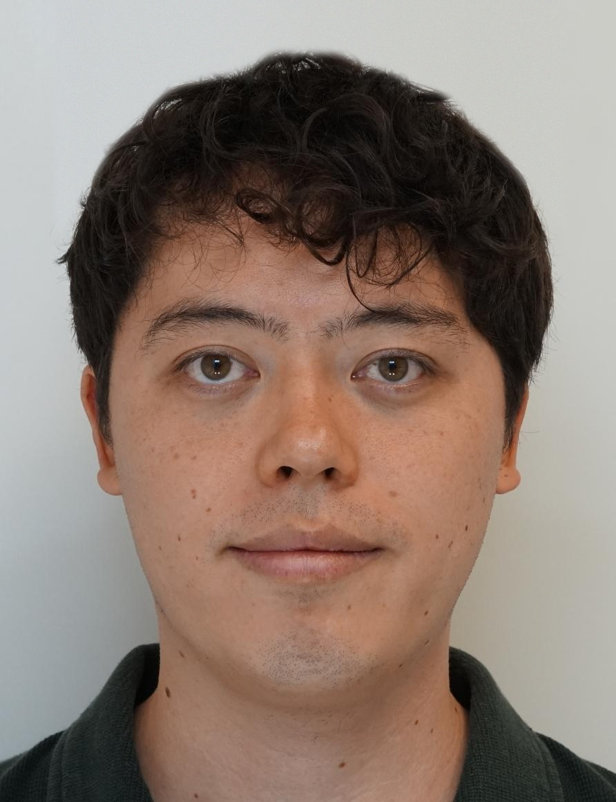

Emile Okada
Assistant Professor
Nanyang Technological University, Singapore
Email: firstname.lastname at ntu.edu.sg
Office: SPMS-MAS-04-16
I work on representation theory, with a focus on p-adic groups, character theory, wavefront sets, Hecke algebras, and the Langlands program.

I am co-organising Wavefront Sets in Number Theory and Representation Theory at the Institute for Mathematical Sciences, National University of Singapore, in September 2027.
P-adic Arthur Packets Seminar (Spring 2024)
I am currently accepting applications from prospective PhD students interested in representation theory, the Langlands program, and related areas.